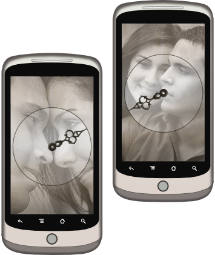

A romantic pair of apps
to replace the wedding ring.

A romantic pair of apps to replace the wedding ring
↓ Download
Frequently Asked Questions
Q: How does it work?
A: When you open the app,
it contacts the one you're connected to using Google's
Cloud to
Device Messaging service. The other app responds by sending
its location back to you. (This might take a while depending
on the time it takes to enable the GPS.)
After receiving the location, you will see an arrow that points
towards your loved one!
Q: How do I connect?
A: First, install Connect Forever onto two GPS-capable Android
devices with an internet connection.
Then, select "Propose" from the home screen of one of the apps.
You will get a proposal code that you should deliver to the one you want to
connect to. You can do this via snail mail, hot-air balloon, white
horse or otherwise. He or she presses "Enter Code" on the home
screen and enters this code. You will both get a message
congratulating you and from then on, the app will work as
described above.
Q: Is this secure?
A: Yes, the only one that can see your location is the Android
device of the one you are connected to. Your locations are sent
over an encrypted connection and are not stored along the way.
However, you have to realise the privacy implications of allowing
someone else to potentially always know where you are. Please only
connect forever to someone you have no secrets for.
Q: What does it cost?
A: It's free!
Q: It doesn't work. Help!
A: If you are connected and you keep seeing the "Connecting..."
dialog, this means that either your or the other's location cannot
be found. Make sure that your GPS is turned on and working. It is
also possible that the other's phone is off, or that one of you
has no connection to the internet. Is it still not working? Try turning
the phone's internet off and on.
Q: What happens if I reset the app?
A: The app will return to the state it was in when you first
downloaded and opened it.
The person that you were connected with will see that your
broke up the next time he or she opens the app. You can always
connect again!